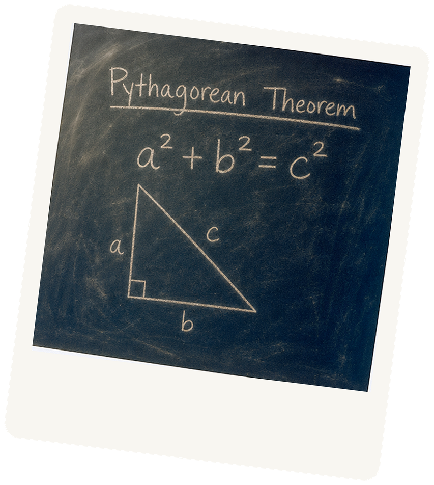
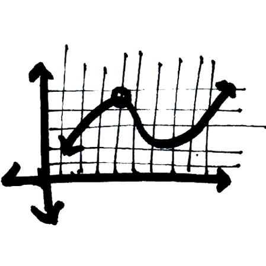
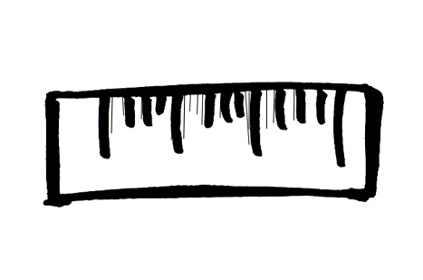
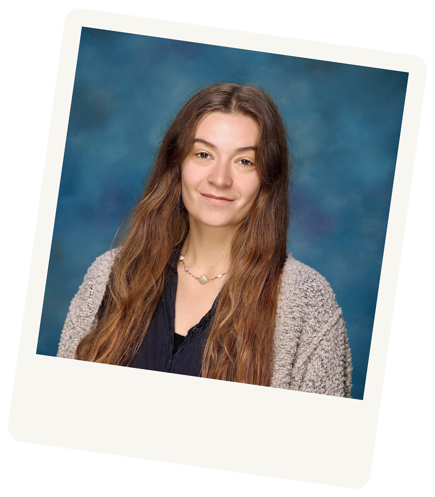

The Foundations
Build number sense and solid arithmetic habits.
- Fractions & decimals made visual
- Word problems broken into clear steps
- Hands-on models before symbols
Math tutoring & STEM learning
Helping girls build confidence and foundations in math and STEM
We support upper elementary through high school learners with personalized instruction to transform math anxiety into mathematical fluency.

By grade band
Different ages need different kinds of math support. Here’s how we match that.
Build number sense and solid arithmetic habits.
Grow comfort with algebra and multi-step thinking.
Make advanced math feel readable—and usable on exams.
How we teach
Five stops, left to right—from paper and pens to confidence without math anxiety.

Concrete Examples Real-world first, then symbols.
Explain it back If they can teach it, they know it.Inclusive by design
Practical strategies for ADHD, ADD, dyslexia, and dyscalculia—not one-size-fits-all worksheets. Pacing tracks cognitive load and adapts to how each student learns best.
Your tutor

Biomedical engineer · Math & STEM tutor
Sarah studied Biomedical Engineering at Georgia Tech, where she worked in robotics labs, developed inventions, and helped design curriculum to foster creativity and an entrepreneurial mindset in engineering students. After a few years in professional product development, she pivoted to education—to empower the next generation of engineers and thinkers, especially girls in STEM.
She started tutoring math in high school and has returned to it professionally—now for five years. She works 1:1 with students in grades 3–12+, and recently taught as a specialist STEM instructor and substitute math instructor at The Willows Community School.
She draws on engineering and industry experience—electronics, computer science, and mechanics—to make math concepts concrete and usable in later learning. She is skilled at helping students who are behind build top-of-class understanding, including learners with dyslexia, dyscalculia, and ADHD.
Families she’s worked with have students at Turning Point School, The Willows Community School, Novel Education Group, Beverly Hills Unified, and independent schools nationwide.
Student voices
Next step
Tell me a little about your student—online or in person, location, school, and grade—so we can talk through pricing and whether Blue Labs Learning is the right match.